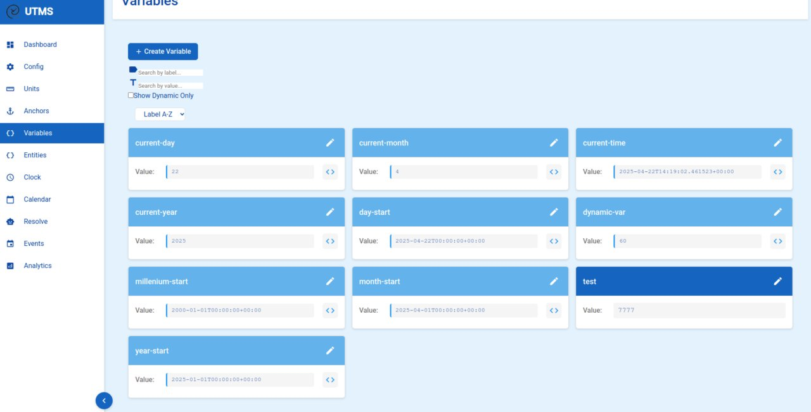

Universal Time Modeling System (UTMS)
Time is Not a Number—It's a Program
UTMS is a programmable, modular framework for modeling time, events, habits, routines, interruptions, anchors, and measurements. It treats time as an intelligent fabric, not a fixed scale. Built around Hy (Lisp on Python), UTMS enables condition-based automation, relative scheduling, probabilistic durations, and semantic representations of time.
What UTMS Can Do
- Trigger automation with a single button press on an Arduino keypad.
- Track sleep, suspend your laptop, and log wake-up events with meaningful names.
- Start music and open Emacs automatically when you begin coding.
- Chain events (e.g., “end sleep” → “start morning routine” → “load AI prompt”).
- Model time in relative, fuzzy, or conditional forms (“30m after sunrise”, “if rainy”).
- Run programmable time logic with full Lisp expressiveness.
- Reflect, analyze, and act on your life through programmable time agents.
Architecture Overview
- ü߆ Core: Programmable entities (events, anchors, units, etc.) in Hy
- ⌨️ CLI: For low-level interaction and scripting
- üåê Web API: Serves time data and logic to UI & other systems
- üñ•Ô∏è Web UI: Frontend for interacting with UTMS visually (in progress)
- üìü Arduino: External inputs via keypad and sensors for physical logging
Key Features
| Feature | Status |
|---|---|
| Hy-based time DSL | ✅ Stable |
| Arbitrary time units | ✅ Working |
| Relative + absolute modeling | ✅ Working |
| Conditional activation | ✅ Working |
| Persistent entity storage | üü° Partial |
| Web API | üü° In progress |
| Web UI | üü° Early dev |
| Arduino integration | üü° Prototyped |
| Entity macros | üîú Planned |
| Probabilistic durations | üîú Planned |
| Multi-threaded timelines | üîú Planned |
Visual Showcase
UTMS is visual, programmable, and semantic. Here's a preview:
Physical logging with Arduino: UTMS via keypad, LCD, and sensors.
Tracking activities with contextual categories and timestamps.
Named variables for semantic and programmable time logic.

Define your own time units—days, cycles, moods, anything.

Custom visual clocks for situational or symbolic tracking.

Time entities: tasks, habits, events, anchors, measurements.

Flexible, programmable entities with hierarchical composition.

Tracking tasks with planned/actual duration and conditions.

Anchors as meaningful reference points: “wake”, “sunset”, “restart”.

Web-based editor for interactive time modeling (WIP).
Binary habit tracking with time-stamped completion events.
Logging mood across time to correlate with tasks and interruptions.
Charting arbitrary metrics over time: health, productivity, etc.
Tracking commutes and transportation events with conditional logic.
Integrating weather conditions into scheduling and predictions.
Get Involved
UTMS is under active development and looking for collaborators. We're building a new paradigm for time—one programmable second at a time.